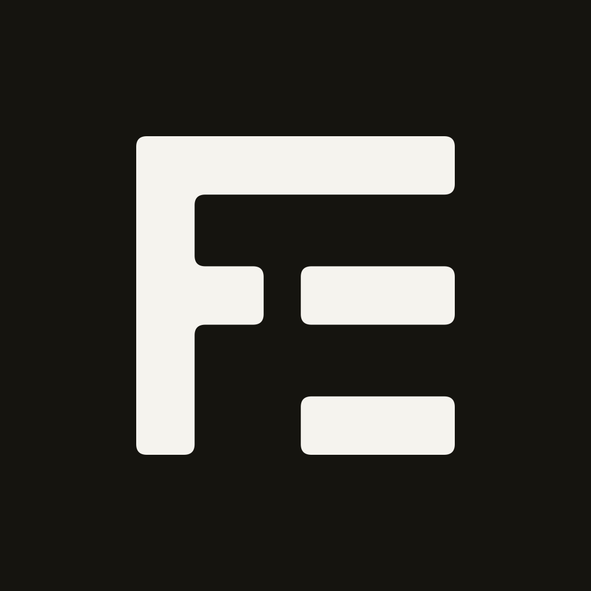

O ícone é o símbolo em papel sobre tinta, sem cantos embutidos (cada sistema aplica a sua máscara). Numa tela cheia de ícones coloridos, o preto sólido se destaca sem destoar.

Testado com as três máscaras mais comuns, sobre os arquivos exportados de verdade. A marca se sustenta com folga em todas.